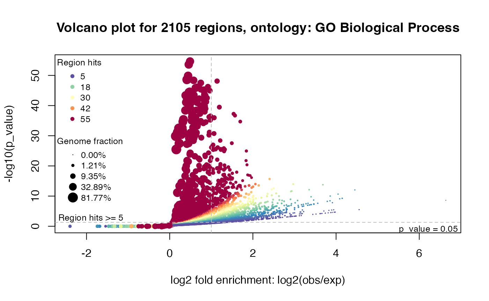
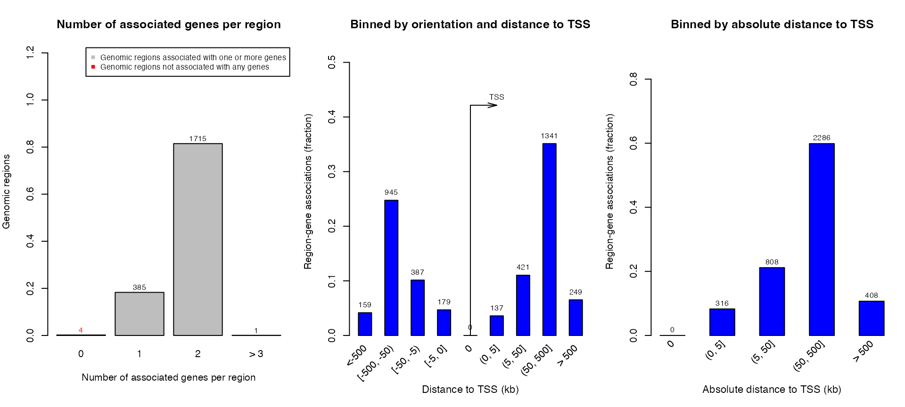
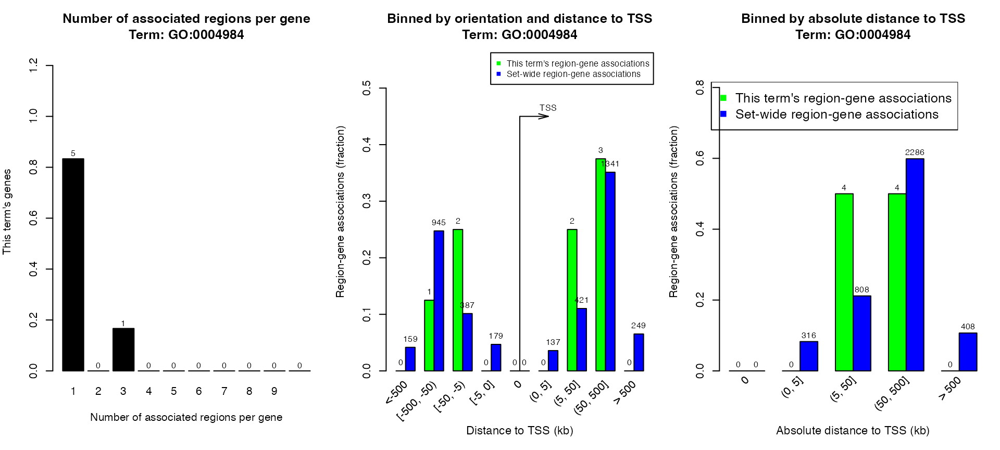

vignettes/topic3_01_online_GREAT.Rmd
topic3_01_online_GREAT.RmdWe first read the peaks (https://github.com/jokergoo/GSEAtraining/blob/master/inst/extdata/mm9_chipseq_peaks.bed) as a data frame.
bed = read.table(system.file("extdata", "mm9_chipseq_peaks.bed", package = "GSEAtraining"))
head(bed)## V1 V2 V3
## 1 chr1 11017025 11017401
## 2 chr1 11734825 11735326
## 3 chr1 12605475 12606176
## 4 chr1 12680375 12681376
## 5 chr1 13416275 13416776
## 6 chr1 13850975 13851726
dim(bed)## [1] 2105 3Use submitGreatJob() to submit the regions to the GREAT web server. By default the species is human (hg19), so here we need to manually set the species argument.
Entering the object job prints the summary of the job.
## Warning: package 'S4Vectors' was built under R version 4.3.2
job = submitGreatJob(bed, species = "mm9")
job## Submit time: 2024-01-26 09:45:07
## Note the results may only be avaiable on GREAT server for 24 hours.
## Version: 4.0.4
## Species: mm9
## Inputs: 2105 regions
## Mode: Basal plus extension
## Proximal: 5 kb upstream, 1 kb downstream,
## plus Distal: up to 1000 kb
## Include curated regulatory domains
##
## Enrichment tables for following ontologies have been downloaded:
## NoneThere are several ontologies integrated in GREAT. The total ontologies can be get by:
availableOntologies(job)## [1] "GO Molecular Function" "GO Biological Process"
## [3] "GO Cellular Component" "Mouse Phenotype"
## [5] "Mouse Phenotype Single KO" "Human Phenotype"
## [7] "Ensembl Genes"By default three GO ontologies are used. More ontologies can be set via the ontology argument in getEnrichmentTables().
tbl = getEnrichmentTables(job)## The default enrichment table does not contain informatin of associated
## genes for each input region. You can set `download_by = 'tsv'` to
## download the complete table, but note only the top 500 regions can be
## retreived. See the following link:
##
## https://great-help.atlassian.net/wiki/spaces/GREAT/pages/655401/Export#Export-GlobalExport
##
## Except the additional gene-region association column if taking 'tsv' as
## the source of result, all other columns are the same if you choose
## 'json' (the default) as the source. Or you can try the local GREAT
## analysis with the function `great()`.tb is a list of three tables and each table contains enrichment results for a GO ontology:
names(tbl)## [1] "GO Molecular Function" "GO Biological Process" "GO Cellular Component"
head(tbl[["GO Biological Process"]])## ID name Binom_Genome_Fraction
## 1 GO:0048522 positive regulation of cellular process 0.4215839
## 2 GO:0048518 positive regulation of biological process 0.4511084
## 3 GO:0007275 multicellular organism development 0.4524430
## 4 GO:0032502 developmental process 0.4867658
## 5 GO:0048856 anatomical structure development 0.4680561
## 6 GO:0044767 single-organism developmental process 0.4846442
## Binom_Expected Binom_Observed_Region_Hits Binom_Fold_Enrichment
## 1 887.4340 1245 1.402921
## 2 949.5831 1304 1.373234
## 3 952.3924 1294 1.358684
## 4 1024.6420 1361 1.328269
## 5 985.2581 1322 1.341780
## 6 1020.1760 1356 1.329182
## Binom_Region_Set_Coverage Binom_Raw_PValue Binom_Adjp_BH Hyper_Total_Genes
## 1 0.5914489 2.233269e-55 2.917766e-51 4726
## 2 0.6194774 2.410611e-54 1.574732e-50 5180
## 3 0.6147268 1.318609e-50 5.742542e-47 4614
## 4 0.6465558 2.030623e-49 6.632522e-46 5254
## 5 0.6280285 2.644837e-49 6.768552e-46 4923
## 6 0.6441805 3.108405e-49 6.768552e-46 5215
## Hyper_Expected Hyper_Observed_Gene_Hits Hyper_Fold_Enrichment
## 1 531.5450 773 1.454251
## 2 582.6075 831 1.426346
## 3 518.9481 816 1.572412
## 4 590.9305 891 1.507792
## 5 553.7021 855 1.544152
## 6 586.5441 888 1.513953
## Hyper_Gene_Set_Coverage Hyper_Term_Gene_Coverage Hyper_Raw_PValue
## 1 0.3437083 0.1635633 1.041517e-34
## 2 0.3694976 0.1604247 7.678359e-35
## 3 0.3628279 0.1768531 1.627532e-51
## 4 0.3961761 0.1695851 4.357668e-49
## 5 0.3801690 0.1736746 4.141140e-51
## 6 0.3948422 0.1702780 1.081873e-49
## Hyper_Adjp_BH
## 1 7.559678e-32
## 2 5.901045e-32
## 3 9.089050e-48
## 4 9.488822e-46
## 5 1.352600e-47
## 6 2.826934e-46The volcano plot is -log10 p-values vs log2 fold enrichment:
plotVolcano(job, ontology = "GO Biological Process")
The global region-gene association plots:

plotRegionGeneAssociations(job, ontology = "GO Molecular Function",
term_id = "GO:0004984")## The webpage for 'GO Molecular Function:GO:0004984' is available at:
## http://great.stanford.edu/public-4.0.4/cgi-bin/showTermDetails.php?termId=GO:0004984&ontoName=GOMolecularFunction&ontoUiName=GO Molecular Function&sessionName=20240126-public-4.0.4-1ZzY2c&species=mm9&foreName=file1126039975169.gz&backName=&table=region
## Note the web page might be deleted from GREAT web server because it is only for temporary use.
The table of the associations between genes and regions.
getRegionGeneAssociations(job, ontology = "GO Molecular Function",
term_id = "GO:0004984")## The webpage for 'GO Molecular Function:GO:0004984' is available at:
## http://great.stanford.edu/public-4.0.4/cgi-bin/showTermDetails.php?termId=GO:0004984&ontoName=GOMolecularFunction&ontoUiName=GO Molecular Function&sessionName=20240126-public-4.0.4-1ZzY2c&species=mm9&foreName=file1126039975169.gz&backName=&table=region
## Note the web page might be deleted from GREAT web server because it is only for temporary use.## GRanges object with 6 ranges and 2 metadata columns:
## seqnames ranges strand | annotated_genes dist_to_TSS
## <Rle> <IRanges> <Rle> | <CharacterList> <IntegerList>
## [1] chr4 43851550-43851876 * | Olfr159,Olfr155 -67832,-12724
## [2] chr4 58682625-58684451 * | Olfr267 115056
## [3] chr4 58690550-58691401 * | Olfr267 107619
## [4] chr4 58735575-58736251 * | Olfr267 62681
## [5] chr4 118315550-118316051 * | Olfr62 -22324
## [6] chr7 115940725-115941576 * | Olfr514,Olfr513 28361,42778
## -------
## seqinfo: 2 sequences from an unspecified genome; no seqlengthsTry the shiny app:
shinyReport(job)Perform GREAT analysis on the GREAT website with a list of TFBS from UCSC table browser:
clade: Mammal
genome: Human
assembly: GRCh37/hg19
group: Regulation
track: ENCODE 3 TFBS
table: 22Rv1 ZFX (encTfChipRkENCFF445OFX)In the “output format” field, select “BED - browser extensible data”, then click the button “get output”. In the next page, click the button “get BED”.